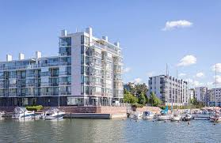
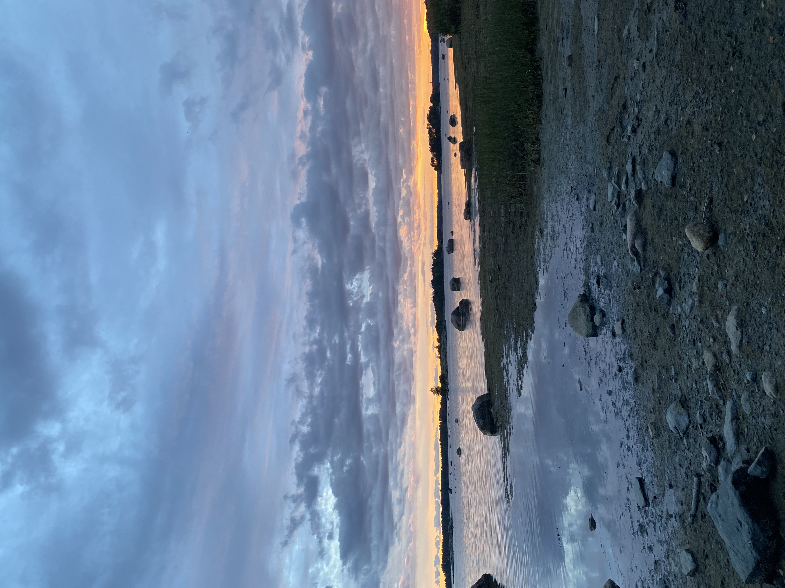
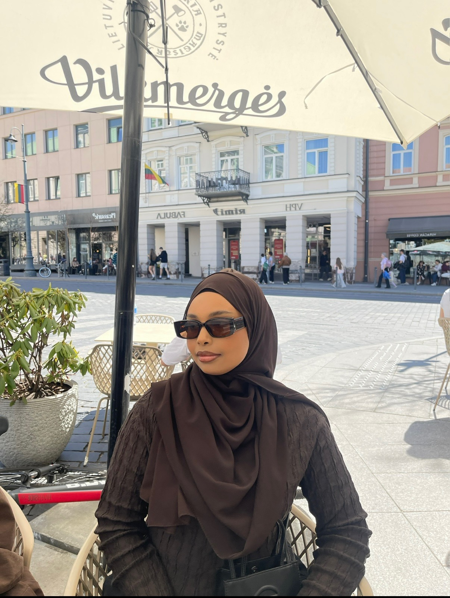

Tietoa meistä
KallahtiCafe on pieni kahvila Vuosaaressa, jonka perustaja ja omistaja on Sahra Awed.
Vuosaari on minulle enemmän kuin paikka – se on koti. Sen meri, rannat ja rauhalliset maisemat ovat olleet tärkeä osa elämääni. Vuosaari tulee aina olemaan sydämessäni.



Kuka olen?
Hei, olen Sahra Awed, KallahtiCafen perustaja ja omistaja. Olen syntynyt ja kasvanut Vuosaaressa, jossa meri ja rauhallinen tunnelma ovat aina olleet tärkeä osa elämääni.
Halusin luoda paikan, jossa ihmiset voivat pysähtyä hetkeksi, nauttia hyvästä kahvista ja viettää aikaa viihtyisässä ympäristössä.